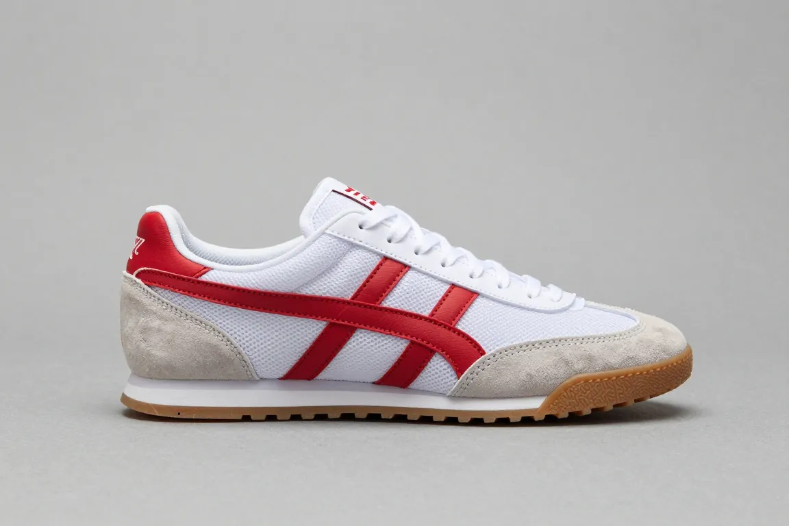

The shoe made for distance running. It has a light nylon mesh and suede upper, a foam midsole, a waffle or lugged rubber outsole, and a raised, cushioned heel.

Core thesis
A running shoe is a tool. Every part, from the weight to the heel height, is set by the way the foot lands and the number of kilometres it runs.
Design principles
Keep the shoe under 300 g in a men's size 9, and cut weight before decoration.
Build the upper from nylon mesh with suede reinforcement at the toe and the heel.
Mould the midsole from EVA foam, 2 to 3 cm thick at the heel and thinner at the forefoot.
Set the heel 8 to 12 mm higher than the forefoot, and flare it for a heel strike.
Mould a waffle or lug pattern into the rubber outsole for grip.
Add a padded collar and tongue for comfort at long distance.
Add reflective trim and a visible stripe for the road.